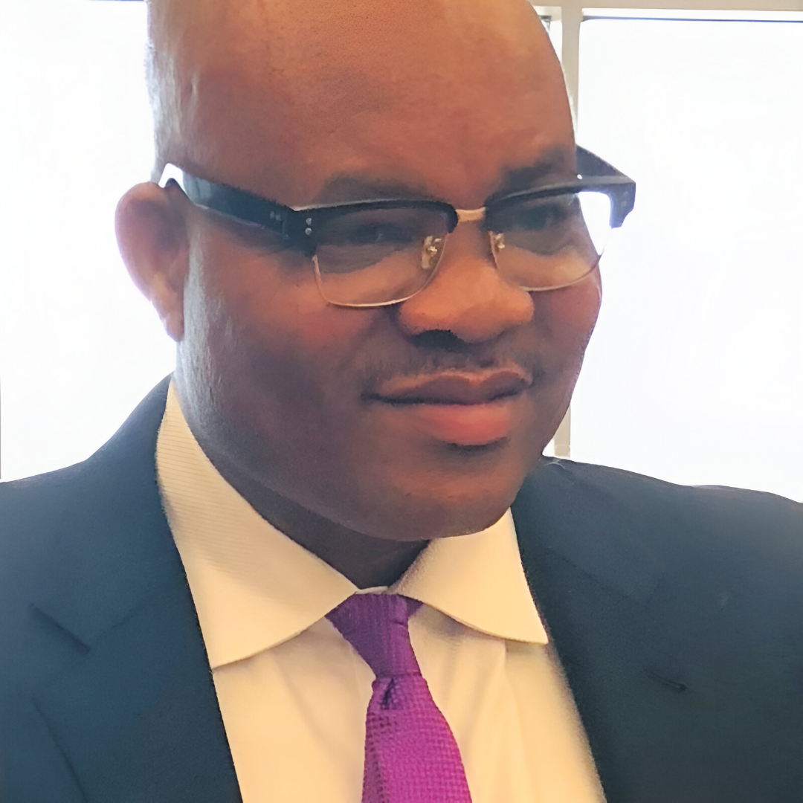
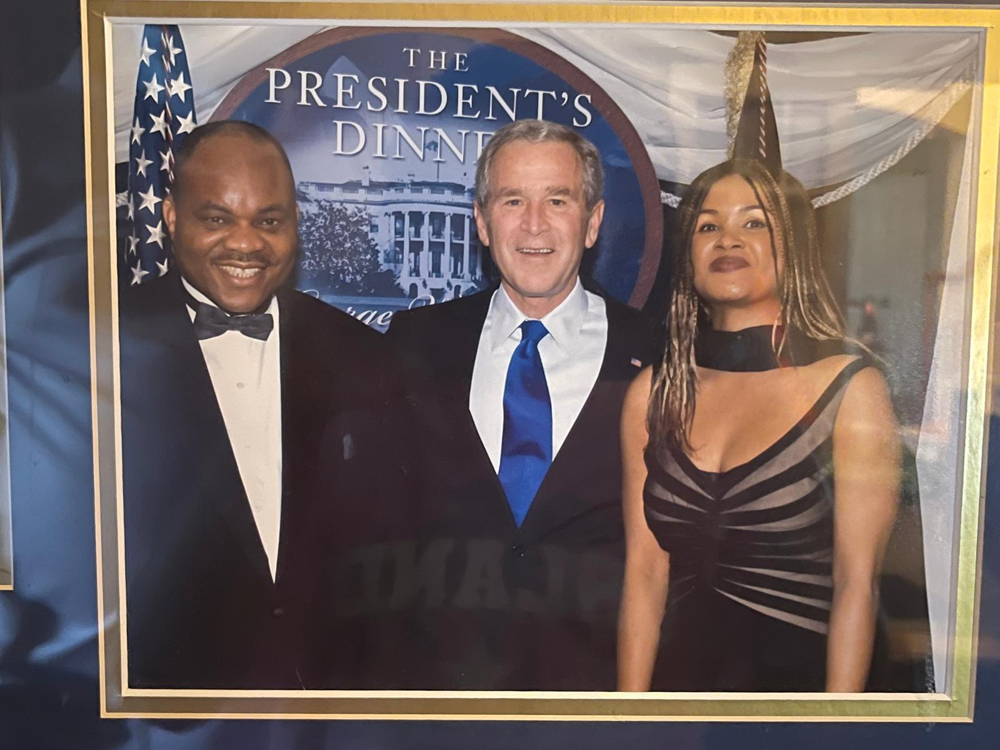
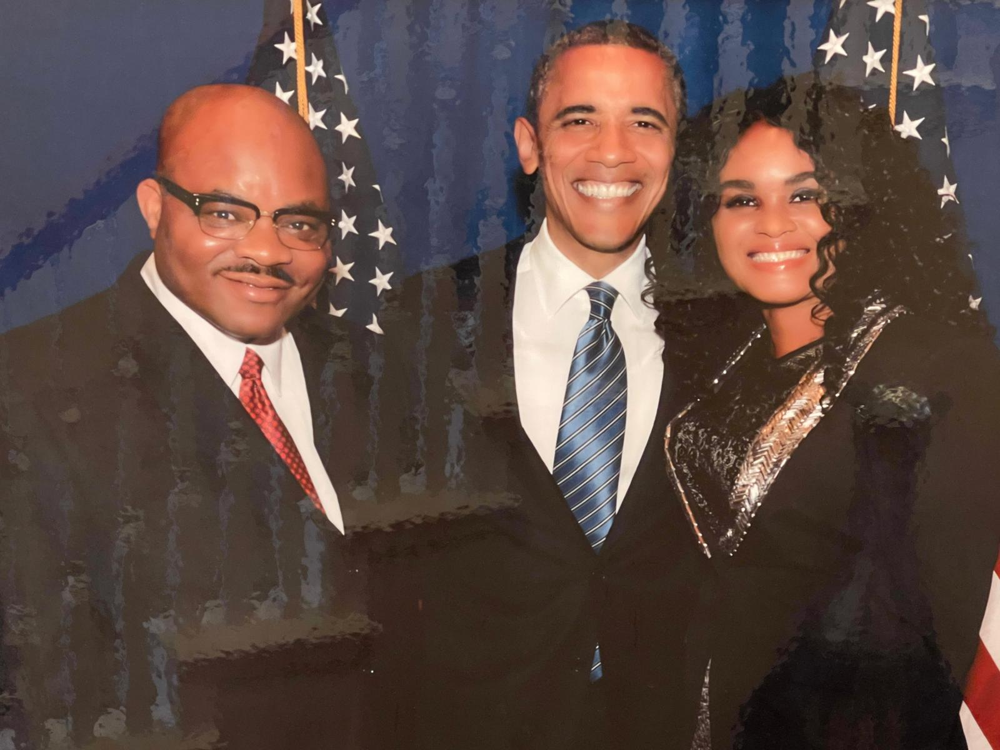

Prince Uche Nwakanma
Prince Uche Nwakanma is a distinguished legal professional and entrepreneur who has transitioned a high-achieving career in the United States into a mission of transformational leadership. As the founder of the Prince Goodwill Foundation, he leverages decades of strategic experience to drive sustainable healthcare, education, and housing initiatives across Nigeria and the U.S.
Driven by a philosophy of empowerment over dependency, Prince Nwakanma established the Foundation to address systemic challenges through four strategic pillars:
Prince Nwakanma remains dedicated to bridging professional excellence with humanitarian service, ensuring that every initiative produces measurable, generational transformation.

